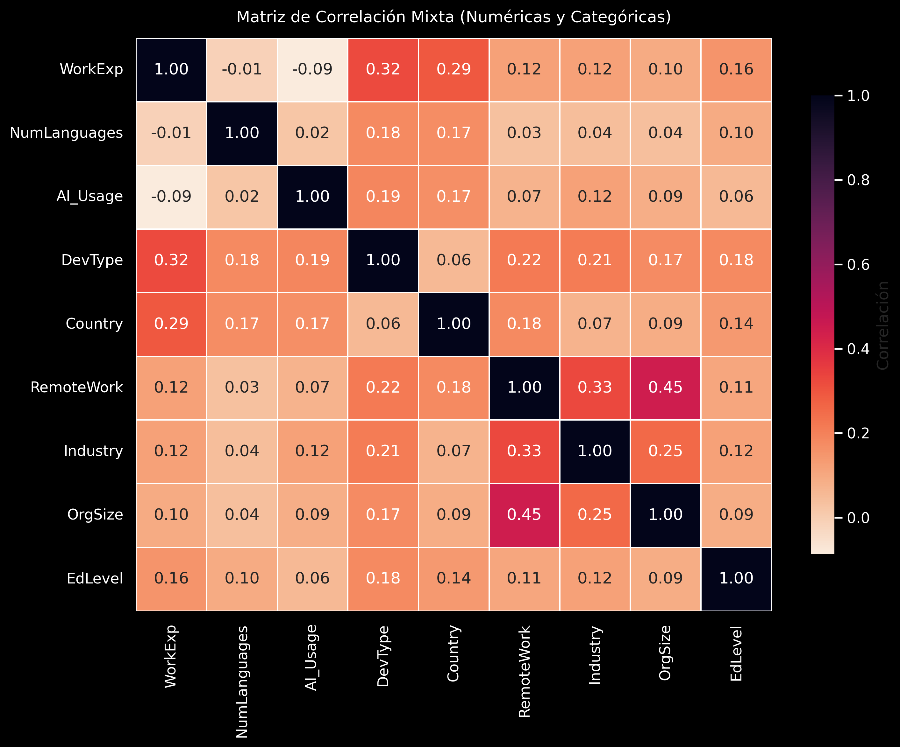
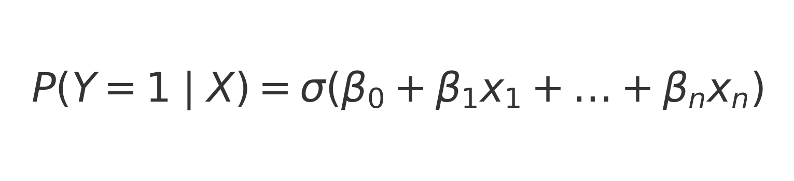
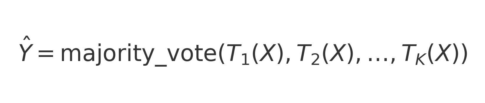
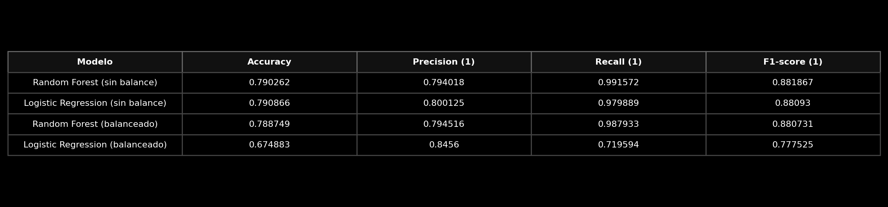
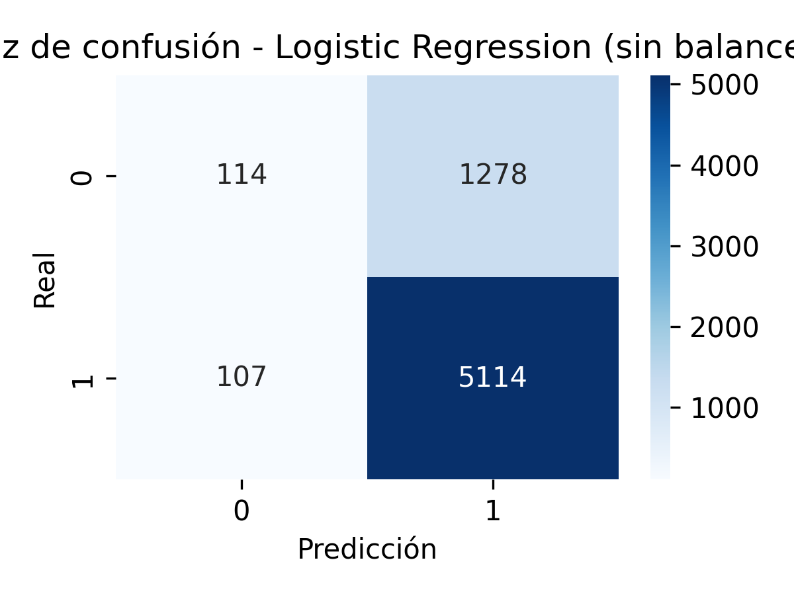
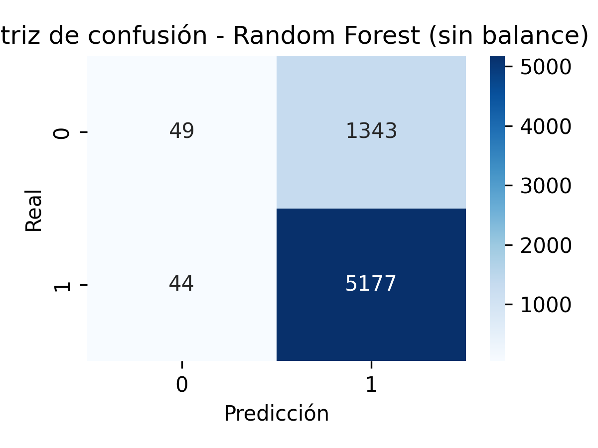
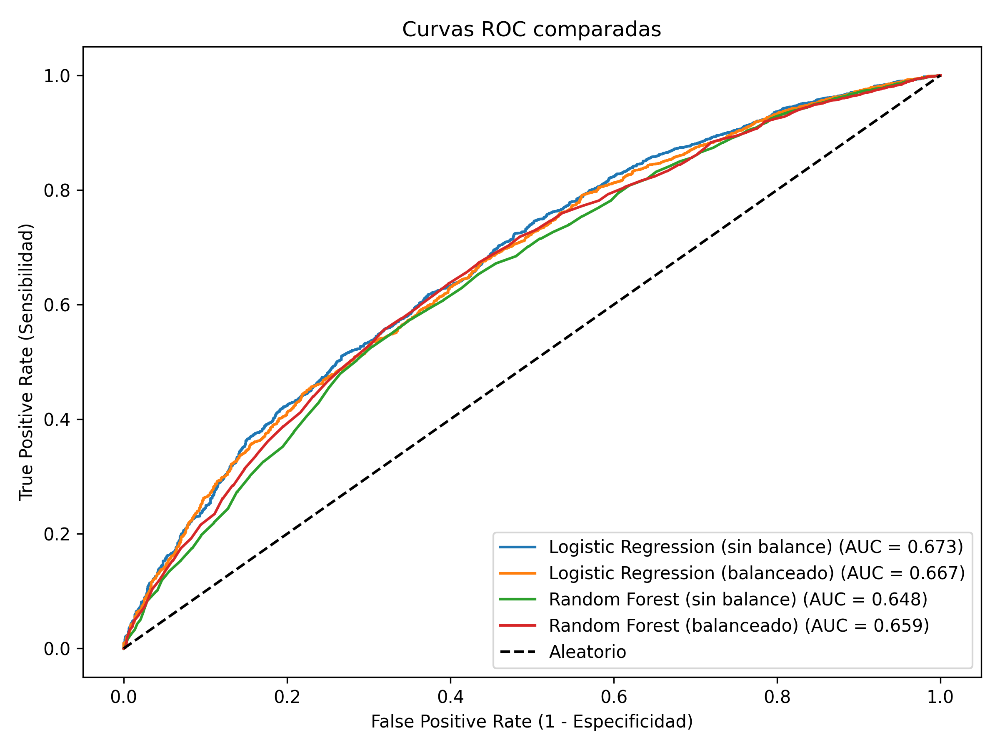
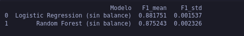
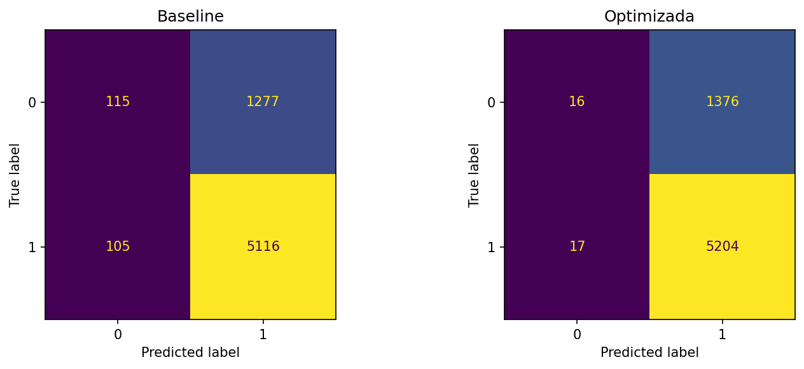

🗂️ Índice General
📘 Introducción
Use flecha ↓ para ver cada sección.
Contexto
Este sitio presenta el Sprint 1 de Modelamiento de Datos I (UMSA), usando el dataset Stack Overflow Annual Developer Survey 2025. Se aborda un problema de clasificación enfocada en la adopción de herramientas de IA por parte de desarrolladores.
Objetivo
Predecir si un encuestado usa IA (Sí/No) a partir de su perfil técnico y demográfico.
Tipo de modelo
Clasificación
Pregunta de investigación
¿Podemos predecir la adopción de IA en desarrolladores utilizando su perfil profesional y tecnológico en 2025 en un estudio global?
Criterio de éxito
F1-score ≥ 0.80 en conjunto de prueba con validación cruzada (k=5).
🧩
- Sección 1 -
Definición del problema
Lineamientos de la Sección 1 del instructivo: problema de negocio, objetivo analítico y alcance.
Use flecha ↓ para ver cada sección.
Necesidad de negocio
Comprender qué factores explican la adopción de IA para orientar formación, herramientas y estrategias de talento en organizaciones tecnológicas.
Variable objetivo
AI_Usage (binaria: 1=usa IA, 0=no)
Pregunta original del dataset
“Do you currently use AI tools in your development process?”
Opciones del formulario
- Yes, I use AI tools daily
- Yes, I use AI tools weekly
- Yes, I use AI tools monthly or infrequently
- No, but I plan to soon
- No, and I don't plan to
AI_Usage = 1 → Usa IA (Daily / Weekly / Monthly)
AI_Usage = 0 → No usa IA (No / No y no planea)
Esta variable será la variable objetivo de nuestro modelo de clasificación.
Predictoras usadas
| Tipo de variable | Columna | Justificación |
|---|---|---|
| Profesional | DevType | El rol del desarrollador influye en la adopción de IA |
| Experiencia | WorkExp | Años de experiencia laboral |
| Tecnológica | LanguageHaveWorkedWith | Lenguajes usados (Python, R, etc.) |
| Geográfica | Country | Contexto regional y acceso a IA |
| Laboral | RemoteWork | Modalidad de trabajo |
| Sectorial | Industry | Tipo de industria o empresa |
| Organizacional | OrgSize | Tamaño de la empresa |
| Educativa | EdLevel | Nivel de formación formal |
Restricciones
- No se incluyen datos históricos previos al 2025
- Dataset autodeclarado (posible sesgo de encuesta)
Hipótesis
Un modelo predictivo permite identificar la tendencia de uso de IA en el desarrollo de software
📊
- Sección 2 -
EDA – 5 bivariados
Exploración de la relación entre AI_Usage y variables clave, como insumo para la selección de la técnica analítica.
- AI_Usage x WorkExp — boxplots
- AI_Usage × NumLanguages — histograma
- AI_Usage × Country — map
- AI_Usage × Industry — barras
- AI_Usage × EdLevel — barras
Use flecha ↓ para ver cada gráfico.
Matriz de Correlación Mixta

Las correlaciones con AI_Usage son bajas; destacan DevType (0.19), Country (0.17), Industry (0.12), OrgSize (0.09), EdLevel (0.06) y WorkExp (-0.09) como factores con influencia leve pero contextual.
Metadatos del EDA
📘 Metadatos del Dataset Limpio
| Columna | Tipo (pandas) | Naturaleza |
|---|---|---|
| DevType | category | Categórica nominal (rol profesional) |
| WorkExp | float64 | Numérica continua (años de experiencia) |
| Country | category | Categórica nominal (país) |
| RemoteWork | category | Categórica ordinal (grado de trabajo remoto) |
| Industry | category | Categórica nominal (sector/industria) |
| OrgSize | category | Categórica ordinal (rangos de tamaño de empresa) |
| EdLevel | category | Categórica ordinal (nivel educativo) |
| AI_Usage | int64 | Binaria (variable objetivo: 0/1) |
| NumLanguages | int64 | Numérica discreta (conteo de lenguajes) |
AI_Usage x WorkExp
Las medianas son similares, con ligera menor experiencia en quienes usan IA; hay outliers con mucha experiencia usando IA.
AI_Usage × NumLanguages
Ambos grupos usan un número similar de lenguajes, aunque los usuarios de IA muestran una ligera mayor diversidad.
AI_Usage × Country
La adopción de IA se concentra en polos tecnológicos como EE.UU., India, Reino Unido y Alemania.
AI_Usage × Industry
Las industrias tecnológicas presentan mayor adopción de IA.
AI_Usage × EdLevel
La adopción de IA aumenta con la formación universitaria y de posgrado, aunque también crece entre técnicos.
🛠️
- Sección 2 -
Determinación de la técnica
Use flecha ↓ para ver cada sección.
2.1 Tipo de Problema
- Tipo de análisis: Clasificación supervisada
- Objetivo: Predecir si un desarrollador adopta IA
- Variable objetivo:
AI_Usage(0/1) - Naturaleza de los datos: Mezcla de variables categóricas
(DevType, Country, EdLevel…) y numéricas (WorkExp, NumLanguages) - Evaluación: Métricas de clasificación (Accuracy, Recall, F1)
2.3 Justificación del Modelo
Regresión Logística
- Modelo interpretable
- Forma un baseline sólido
- Rápido y estable
- Bueno para explicar factores de adopción
Random Forest
- Captura relaciones no lineales
- Robusto frente a ruido y outliers
- Mejor rendimiento en estructuras complejas
- Aporta una visión complementaria
Ambos modelos se probaron en versiones balanceadas para manejar el desbalance en AI_Usage.
2.4 Funciones Matemáticas
📌 Regresión Logística
Modelo probabilístico que estima la probabilidad de que un desarrollador use IA a partir de una combinación lineal de variables predictoras.

Interpretación:
- P(Y = 1 | X) → probabilidad estimada de uso de IA.
- β₀ → constante del modelo.
- βᵢ → influencia de cada predictor.
- σ(z) → función sigmoide para convertir a probabilidad.
🌲 Random Forest
Modelo no lineal basado en múltiples árboles de decisión. Cada árbol vota por una clase, y la predicción final se obtiene por votación mayoritaria.

Interpretación:
- Tₖ(X) → predicción del árbol k.
- K → número total de árboles.
- Ŷ → clase final decidida por mayoría.
- Robusto, captura relaciones no lineales y reduce sobreajuste.
⚔️
- Sección 3 -
Técnicas competidoras
📊 Resultados de Modelos Principales y Competidores

Los mejores resultados se obtienen con Random Forest (sin balance) y Logistic Regression (sin balance), ambos con F1-score ≈ 0.88.
📈 Comparación de Métricas entre Modelos (Plotly)
Comparación general del rendimiento en Accuracy, Precision, Recall, F1 y ROC-AUC para los modelos evaluados.
Matriz de Confusión
Logistic Regression (sin balance)

El modelo acierta ampliamente la clase 1 (usuarios de IA), pero confunde algunos casos de clase 0.
Matriz de Confusión
Random Forest (sin balance)

Random Forest mejora la identificación de la clase 0, manteniendo un desempeño sobresaliente en la clase 1.
📉 Curvas ROC comparadas entre modelos

Las curvas ROC muestran un comportamiento similar entre modelos y un AUC moderado (≈ 0.65–0.67), indicando discriminación aceptable en un problema con señales débiles.
🔁 Validación Cruzada Estratificada (k=5)
Se aplicó validación cruzada estratificada con k=5 para estimar el rendimiento real de los modelos. Este método divide el dataset en 5 partes manteniendo la proporción de clases (0/1).

La regresión logística sin balance logró el mejor F1 promedio (0.8817) con la menor variabilidad, confirmando su estabilidad y generalización.
📈
- Sección 4 -
Comparación (criterio preciso)
Use flecha ↓ para ver cada sección.
📈 Comparación según el Criterio Preciso
El Sprint exige seleccionar el modelo ganador usando un criterio cuantitativo. Aquí se utiliza F1-score por el leve desbalance de la variable objetivo.
| Modelo | F1 (CV k=5) | Std |
|---|---|---|
| Logistic Regression (sin balance) | 0.8817 | 0.0015 |
| Random Forest (sin balance) | 0.8752 | 0.0023 |
El modelo que cumple y supera el criterio preciso con mejor estabilidad es Logistic Regression (sin balance).
🏆 Modelo Seleccionado
Regresión Logística (sin balance)
- Mejor F1-score promedio (0.8817)
- Menor variabilidad (0.0015)
- Mejor AUC entre los modelos (0.673)
- Entrenamiento rápido y alto rendimiento
- Interpretabilidad superior
Cumple el criterio de éxito y ofrece el mejor equilibrio entre rendimiento, estabilidad y simplicidad.
⚙️
- Sección 5 -
Optimización del modelo
Ajuste de hiperparámetros de Regresión Logística usando GridSearchCV y RandomizedSearchCV.
Estrategia de optimización
- Pipeline con
ColumnTransformer:OneHotEncoderpara variables categóricasStandardScalerpara variables numéricas
- Clasificador final: LogisticRegression
- GridSearchCV (k=5, scoring = F1 clase 1)
- RandomizedSearchCV para explorar C en rango continuo
Espacio de búsqueda (Grid):
- C ∈ {0.01, 0.1, 1, 10}
- penalty ∈ {l1, l2}
- solver = liblinear
Resultados de la Optimización
| Modelo | C | Penalty | F1 (CV k=5) |
|---|---|---|---|
| LogReg baseline | 1.0 | l2 | ≈ 0.881 |
| LogReg optimizada (GridSearch) | 0.01 | l2 | ≈ 0.883 |
| LogReg optimizada (Randomized) | ≈ 0.0466 | l2 | ≈ 0.883 |
Matriz de confusión – Baseline vs Optimizada

La versión optimizada reduce drásticamente los falsos negativos (de 105 a 17) a costa de aumentar ligeramente los falsos positivos (de 1277 a 1376).
¿Se cumplió el criterio de éxito?
- Mejora en F1: de ≈0.8810 a ≈0.8820 (≈ +0.1%)
- El instructivo pedía ≈ +5% de mejora
- No se alcanza el +5%, pero:
- Se gana recall en la clase positiva
- Se confirma que el baseline ya estaba casi en su máximo
La optimización refina el modelo, pero no produce una mejora dramática: la Regresión Logística ya era una buena solución con las variables actuales.
⚖️ Limitaciones y ética
Use flecha ↓ para ver cada sección.
⚖️ Limitaciones y Ética
- Dataset autodeclarado — puede contener sesgos de percepción.
- Variables reducidas del dataset original (solo parte de Kaggle).
- Uso ético: el modelo debe apoyar decisiones formativas, no discriminatorias.
💡 Insights y decisiones
Use flecha ↓ para ver cada sección.
💡 Principales Insights del Modelo
- Los roles técnicos especializados incrementan la probabilidad de usar IA.
- La adopción de IA está influenciada por el país y la industria, no tanto por experiencia.
- El uso de IA es transversal: tanto juniors como seniors la adoptan en proporciones similares.
- La educación universitaria facilita la adopción, pero no es determinante.
- El desbalance no impactó negativamente en el desempeño final.
🧭 Decisiones
- Implementar campañas de formación en IA dirigidas por rol profesional.
- Priorizar estrategias de IA en sectores con alta adopción (software, fintech).
- Promover programas de capacitación técnica accesibles para dinamizar la adopción.
- Utilizar la regresión logística como modelo base para predicciones futuras.
🔁 Reproducibilidad
Los artefactos completos del proyecto están disponibles aquí:
Sitio Web (Slides):
https://gastonnina.github.io/miadas_mod_08_proy/
Repositorio GitHub:
https://github.com/gastonnina/miadas_mod_08_proy